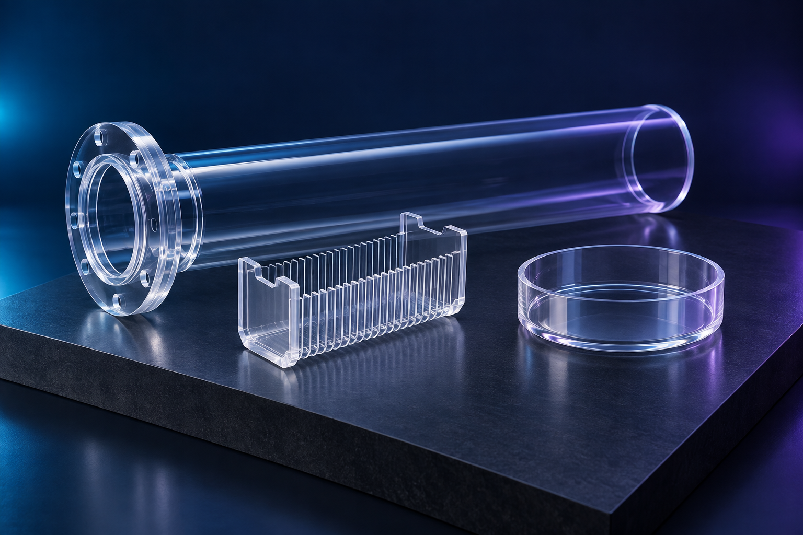
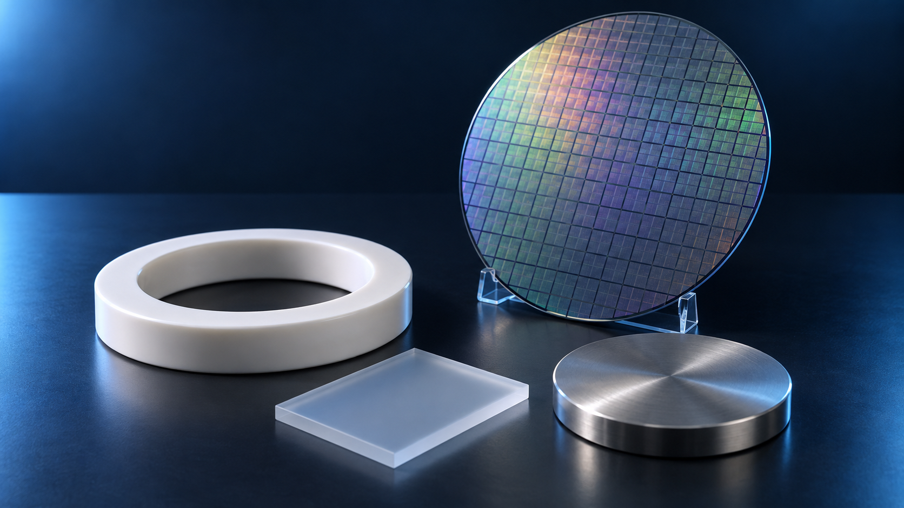
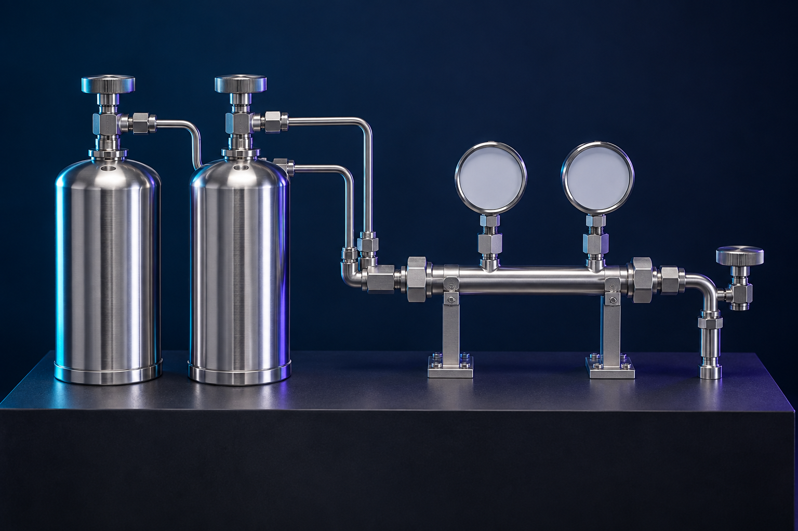
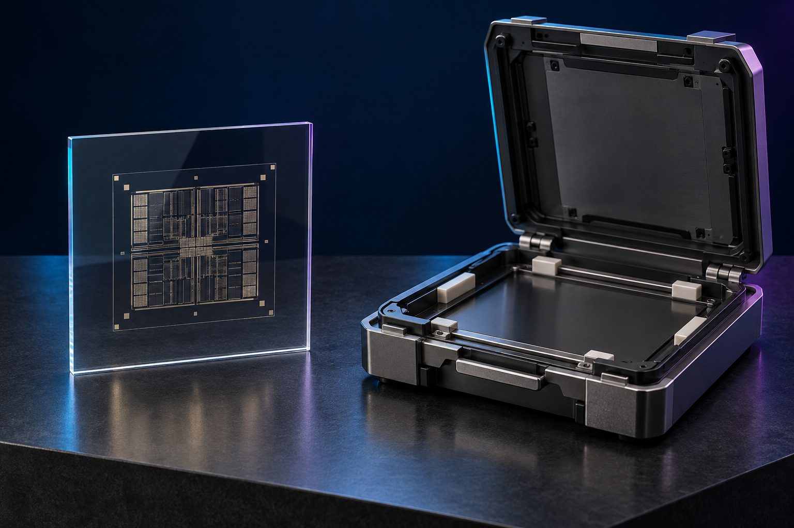
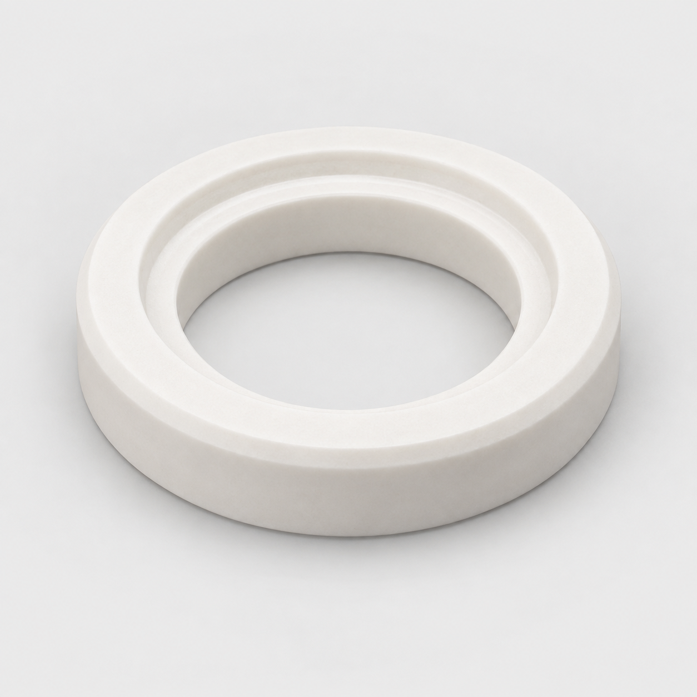
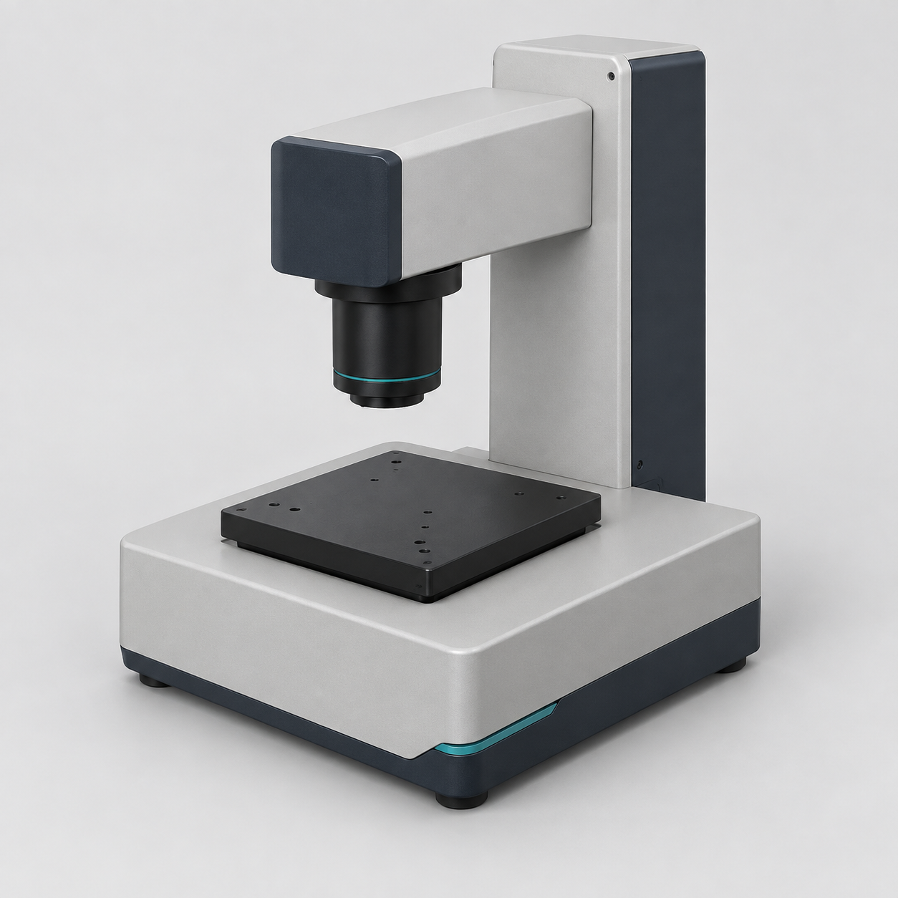
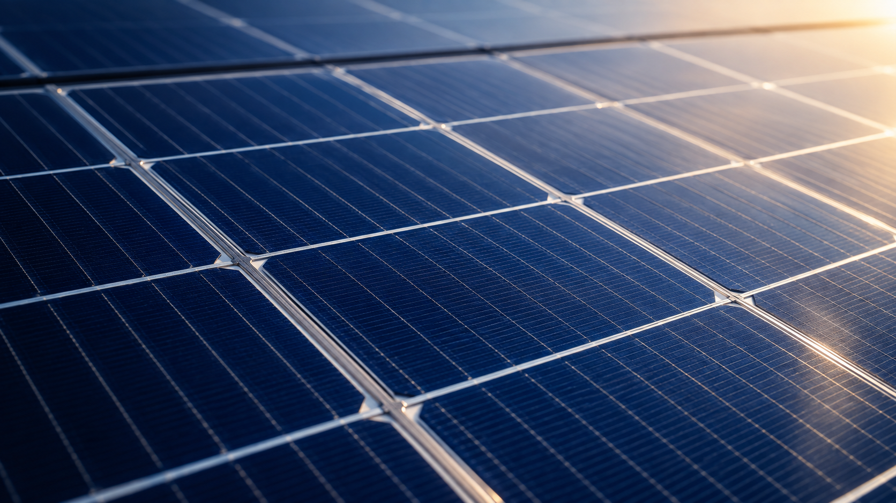

石英製品
石英爐管與製程器皿
爐管、舟、支架、環形件、訂製石英器皿
查看詳細內容MATERIALS & TECHNOLOGY / KNOWLEDGE LIBRARY
依材料、產業或用途尋找技術資訊。從產品特性到品質驗證，連結材料與檢測需求。
本資料庫介紹材料與技術應用，不代表特定品牌代理或現貨供應。型號、規格、供應及服務範圍依需求確認。

石英製品
爐管、舟、支架、環形件、訂製石英器皿
查看詳細內容石英製品
圓形石英晶圓、方形載板、拋光石英片
查看詳細內容石英製品
單晶用坩堝、多晶用坩堝、相關石英部件
查看詳細內容
晶圓與金屬材料
Prime 矽晶圓、外延晶圓、監控晶圓
查看詳細內容晶圓與金屬材料
Monitor、dummy、reclaim 與植入監控晶圓
查看詳細內容晶圓與金屬材料
製程載具、出貨盒、開放式 cassette、包裝系統
查看詳細內容晶圓與金屬材料
SiC 基板與外延片、GaN 相關外延體系、再生基板
查看詳細內容晶圓與金屬材料
Cu、Co、Ru、Ta、Ti、W 等金屬／合金靶材與試片
查看詳細內容製程化學材料
ArF／ArFi、KrF、i-line、厚膜光阻與顯影液
查看詳細內容製程化學材料
BARC、SOC、SiARC、topcoat 與附著促進材料
查看詳細內容製程化學材料
電子級酸堿、過氧化氫、IPA、超純水與清洗配套材料
查看詳細內容
製程化學材料
含氟製程氣體、矽系氣體、摻雜氣體、載氣與混合氣
查看詳細內容製程化學材料
矽系、鋁系、鈦系、鉭系、鉿系與低介電前驅物
查看詳細內容製程化學材料
Oxide／STI、Cu、W、barrier 研磨液與配套添加劑
查看詳細內容製程化學材料
銅電鍍體系、抑制劑、促進劑、整平劑與配套材料
查看詳細內容
光罩與載具
光罩基板、DUV 圖形光罩、IC／顯示用保護膜
查看詳細內容光罩與載具
Reticle pod、RSP、潔凈儲存柜與搬運配套
查看詳細內容電子與封裝材料
環氧塑封料、液態封裝材料、電子級矽膠與接著劑
查看詳細內容電子與封裝材料
UV 剝離膠帶、PI 膠帶、泡棉膠帶、離型膜與保護膜
查看詳細內容電子與封裝材料
導電膠與橡膠、熱壓導電膜、錫膏、助焊劑與導電涂料
查看詳細內容電子與封裝材料
導熱墊、導熱膏、散熱接著劑、冷卻介質與液冷快接組件
查看詳細內容電子與封裝材料
BMI 樹脂、石英布、稀土氧化物、金屬粉末、功能涂料與表面添加劑
查看詳細內容電子與封裝材料
光學擴散片、LED 封裝矽膠、光纖預型體、玻璃表面涂層與轉移輔助材料
查看詳細內容電子與封裝材料
PI、PBO、光阻樹脂與相關功能聚合物
查看詳細內容
零件、耗材與設備
Wet bench、旋轉處理、石英管清洗、載具清洗與常壓電漿
查看詳細內容
零件、耗材與設備
靜電吸盤、晶圓感測器、耐蝕緊固件、真空與熱管理組件
查看詳細內容零件、耗材與設備
壓印平臺、模板、標準樣品與光學微結構驗證材料
查看詳細內容零件、耗材與設備
研磨墊、背膜、修整盤與保持環
查看詳細內容零件、耗材與設備
氣體濾芯、化學濾芯、漿料濾芯、凈化筒
查看詳細內容零件、耗材與設備
擦拭布、手套、潔凈袋、棉簽、PVA 刷與容器
查看詳細內容零件、耗材與設備
陶瓷環、SiC 部件、focus ring、保持環與氣體分配部件
查看詳細內容
零件、耗材與設備
超聲接合、引線接合、芯片轉移、銅柱互連與聲學檢測
查看詳細內容零件、耗材與設備
溶劑回收、local scrubber、漏液監測、真空泵節能與排氣配套
查看詳細內容零件、耗材與設備
金剛石切割線、切割刀片、鉆管與相關加工耗材
查看詳細內容分析與量測
ICP-MS／ICP-QQQ、IC、TOC、滴定、pH／導電度、CVS／CPVS
查看詳細內容分析與量測
GC-MS、TD-GC-MS、FTIR、水分、氧、RGA 與 AMC／VOC 監測
查看詳細內容分析與量測
液中粒子計數、PSD、Zeta、固含、黏度、pH 與 ORP
查看詳細內容分析與量測
XPS、SIMS、SEM-EDS、FIB、TEM／STEM、XRD、XRF／XRR、AFM、GDMS
查看詳細內容分析與量測
表面掃描、幾何量測、TXRF、FTIR 氧碳、電阻率與光學／坐標量測
查看詳細內容分析與量測
外觀與顆粒、圖形缺陷、CD、registration、可印刷性與保護膜檢查
查看詳細內容分析與量測
LC-MS/MS、GPC／SEC、TGA、DSC 與黏度分析
查看詳細內容
太陽能材料
矽片、石英坩堝、金剛石切割線、導電漿料與加工耗材
查看詳細內容技術與資料整合
需求規格、選型評估、樣品驗證、接口規劃與維護需求討論
查看詳細內容技術與資料整合
COA／eCOA、條碼、LIMS、SPC、供貨商資料與材料履歷
查看詳細內容沒有符合條件的項目，請減少篩選條件或更換關鍵字。
AI 品類情境示意，非實際商品型錄